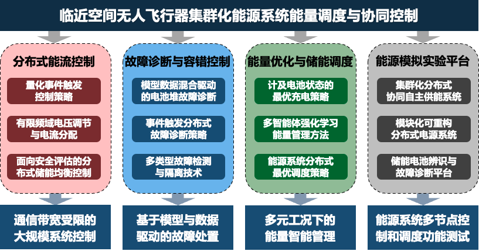

Tianjin Key Laboratory of Intelligent Unmanned Cluster Technology and System
天津市智能无人集群技术与系统重点实验室紧密结合国家和天津市新一代信息技术产业发展需求，立足国际智能无人集群系统发展前沿，开展战略性、前沿性和创新性的智能无人集群技术应用基础研究，培养多学科交叉杰出人才，并致力于成为国内领先、国际有影响力产学研一体的一流研究基地。实验室围绕自主与感知、智能与涌现、协同与群智等关键科学问题，从多源感知、多尺度融合、自主与交互、多体与协同等技术领域展开科研攻关，探索精细感知无人系统多体协同理论、研究陆海空天自主智能体及多体集成方法。实验室的主要任务是智能决策、协同规划与控制、优化调度、自主保障与运维等多个维度开展智能无人集群技术和系统的研究，建设天津市重大科技基础研究设施、陆海空天自主智能体及多体集成研究中心，开发无人系统应用技术研发平台，突破智能传感、智能控制、无人终端、网络协控与系统等核心技术，力争在自主智能无人系统领域取得一批国际领先的原创性研究成果。
以左志强教授、王一晶教授、张志成副研究员和李鹏副研究员为核心骨干成员的“临近空间能源团队”，依托天津市智能无人集群技术与系统重点实验室，曾获得2021年度天津市科学技术进步一等奖。该研究团队以临近空间太阳能无人飞行器能源系统为背景，以提供可靠高效的能量调度控制为目标，在分布式优化控制、故障检测与隔离以及储能调度与均衡等领域展开了诸多研究。目前已基于分布式触发算法、模型与数据驱动间隙度量以及深度强化学习的方法，实现飞行器能源系统的能流调度、功率平衡、储能控制、主动抗扰。产出众多理论和工程成果，已经应用至临近空间太阳能无人飞行器、南极泰山站和海南野暑岛。
项目组针对临近空间无人飞行器集群化能源系统的协同控制、能量调度以及故障诊断等问题开展研究，实现能量平衡、功率平衡、储能均衡以及能流高效四个目标。已在国内外期刊上发表学术论文40余篇，其中包括 IEEE Transactions on Automatic Control（长文）、Automatica 等多篇控制领域高水平论文，申请发明专利20余项。
